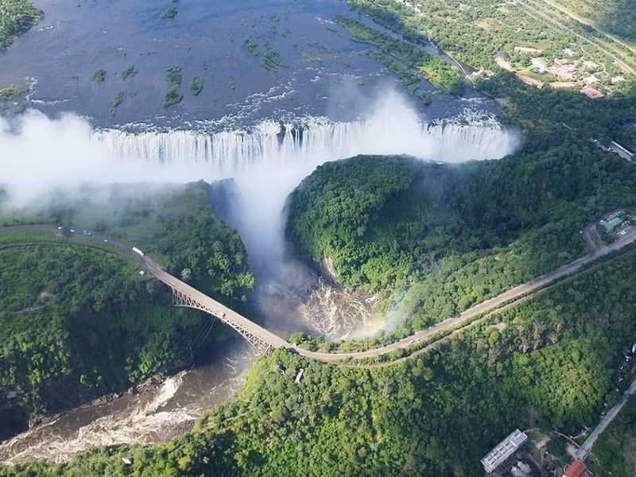

Zambezi River White Water Rafting Adventures

Zambezi White Water Rafting Adventures exists to deliver unforgettable and
exhilarating experiences
on the iconic Zambezi River, combining world-class safety, expert guidance, and
deep respect for
nature. Our mission is to connect guests with the raw power and beauty of
Victoria Falls through
thrilling rafting adventures while supporting local communities and promoting
sustainable tourism.
Guided by our core values of safety, excellence, integrity, and environmental
stewardship, we strive
to be Africa’s leading adventure company—living by our motto: “Ride the Rapids.
Feel the Power of
the Zambezi.”
History
Founded in 2005, Zambezi White Water Rafting Adventures was inspired by the
beauty of the Zambezi River and the majestic Victoria Falls. The founders
envisioned creating unforgettable outdoor experiences that would allow visitors
to connect with one of Africa's greatest natural wonders while enjoying the
thrill of white-water rafting.

Over the years, the company has become a trusted provider of rafting adventures
in the Batoka Gorge, offering exciting and safe experiences for visitors from
around the world. Today, it continues to
celebrate the spirit of adventure while showcasing the breathtaking landscapes
and rich heritage of the Zambezi River region.